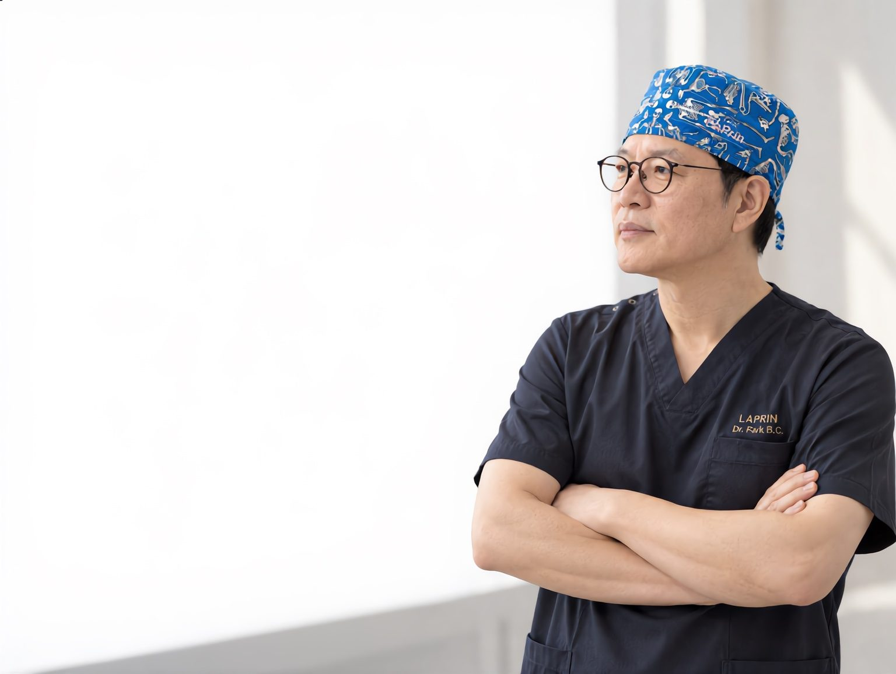
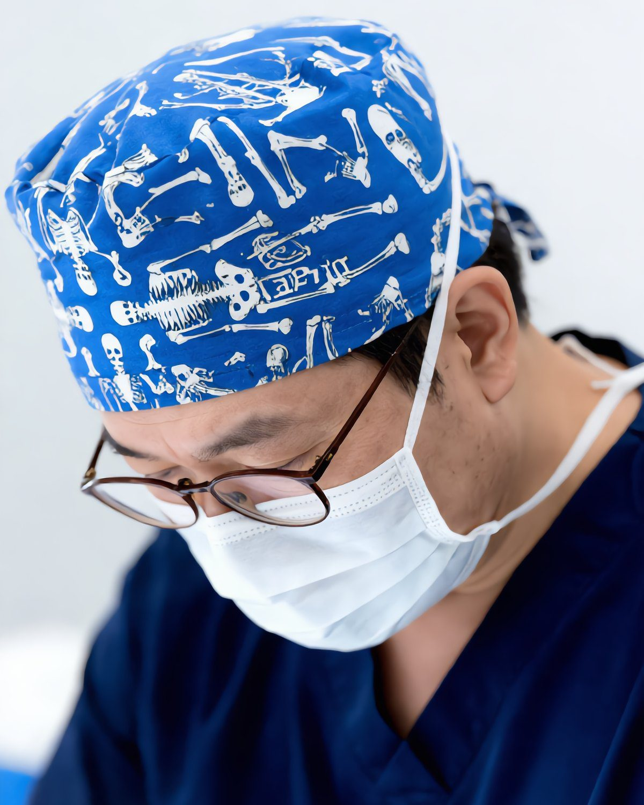
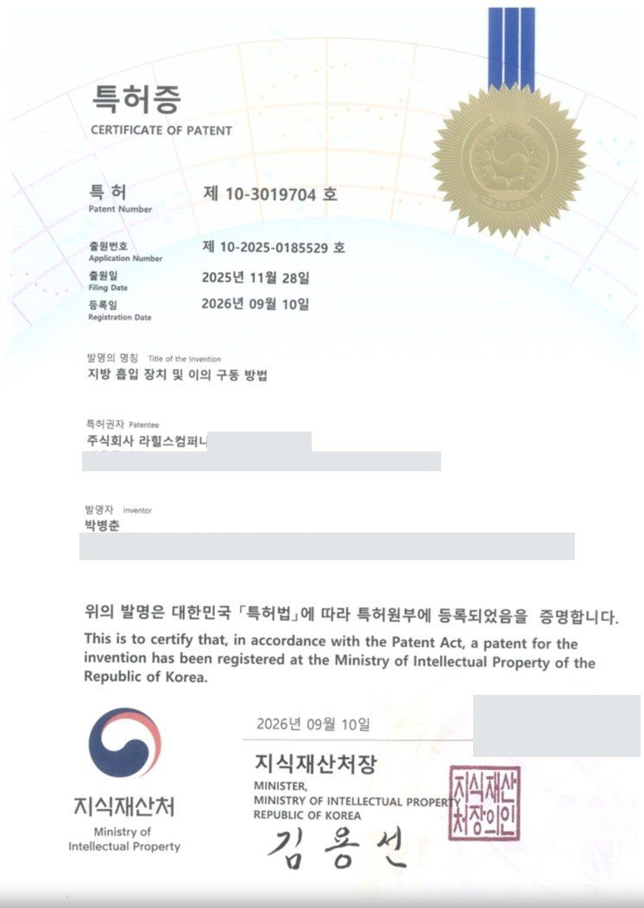
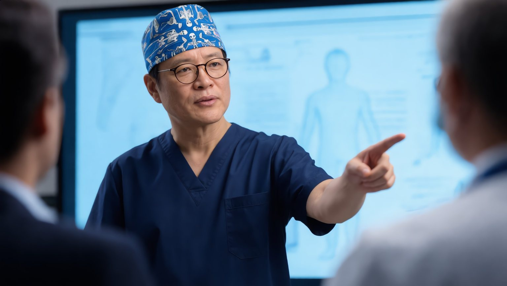
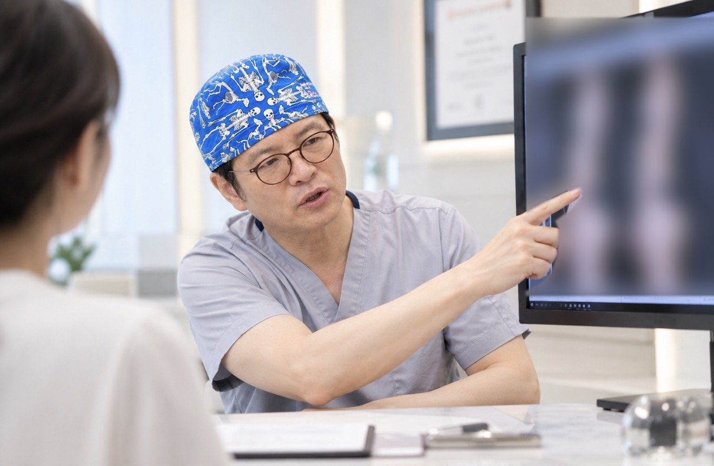

I look at the line that’s left.Dr. Byongchoon Park, liposuction and body contouring, LaPrin Clinic Seoul
Twenty-five years of liposuction taught me something simple: remove only what should go, and keep what should stay.
I judge a result by the silhouette after surgery, more than by how many cc came out. That’s why I never look at the abdomen or the arms in isolation.

Reducing one area doesn’t complete the line.
Remove, refine, refill, rebuild.
-
RemoveOnly where needed, only as much as needed.
Where fat comes out matters more than how much. I reduce just enough for the waist and hips, the arms and torso, to define each other.
- Abdomen & flanks
- Back, arms, thighs
- Large-volume liposuction
-
RefineRefining so the line doesn’t break.
From waist to hips, from arm to torso. Treated and untreated areas should read as one continuous line.
-
RefillYour own fat, where volume is missing.
Fat is harvested intact during liposuction and can be moved the same day to areas that need volume, such as the hips, buttocks and breasts.
-
RebuildWhen fat alone isn’t the answer, I’ll tell you.
If the skin has stretched a lot, or pregnancy and weight changes have reshaped the body, liposuction alone has limits. In that case I recommend correcting skin and tissue together.
You won’t need all four steps.
I’ll look at your body first and explain only the steps you need.
Start with your bodyA beautiful shape starts with smooth skin.
E-Lipo is the liposuction method Dr. Byongchoon Park developed. It runs in three steps: the fat layer is separated before suction, then aspirated, and the thin fat left under the skin is evened out.
The E in E-Lipo stands for Easy, Efficient and Elegant.
My liposuction started as surgery to reduce fat. Over the years it became surgery to shape the body, and then surgery that keeps the skin surface soft and smooth as well. E-Lipo is the result.
The skin surface has to stay smooth after liposuction; only then can a line be built on it. To me, that is the foundation of body shaping.

Short
In large-volume liposuction, the longer the operation, the heavier the anesthesia burden. E-Lipo is designed so that surgery time doesn’t stretch out even when the volume is large, reducing both the anesthesia burden and tissue damage.
Protective
Less damage to vessels, nerves and the tissue that supports the skin.
Smooth
The line only shows when the thin layer of fat just under the skin is refined too. To keep that surface from turning uneven, every surgery ends with a step that spreads the remaining fat evenly.
How the surgery works
- SeparateBefore suction, the fat layer is gently loosened first, protecting vessels, nerves and supporting tissue.
- AspirateThe loosened fat is removed evenly, only where and as much as needed.
- EqualizeThe thin fat left under the skin is evened out to prevent surface irregularities.
E-Lipo began with the SAFE Lipo concept (2016) and was redesigned for Korean body types: the device combination, sequence, suction-volume criteria and pain management.
Devices: VASER, Lipomatic and MicroAire PAL, with Renuvion when skin tightening is needed

View certificateA question from the operating room became a patent.
Could it be done more evenly, more precisely? That question led me to develop a liposuction device and its operating method, registered as a Korean patent in 2026.
- Title
- Liposuction Device and Operating Method
- Registration
- No. 10-3019704
- Application
- No. 10-2025-0185529
- Filed
- Nov 28, 2025
- Registered
- Sep 10, 2026
- Inventor
- Dr. Byongchoon Park
As stated on the patent certificate. Dr. Park is the inventor; the patent is held by a Korean corporation. The patent covers the liposuction device and its operating method, not the E-Lipo procedure as a whole.
Dr. Byongchoon Park
M.D., Seoul, Korea
Dr. Byongchoon Park is the director of LaPrin Clinic in Cheongdam, Seoul, specializing in liposuction and body contouring. He developed the E-Lipo System and a patented liposuction device, and now teaches the method to surgeons from abroad.
“Twenty-five years on one path. I built the method, then the device, and now I teach it.”
- Clinical experience
- 25 yrs
- System developer
- E-Lipo
- Liposuction device inventor
- Patent
Credentials
- Director, LaPrin Clinic (Plastic Surgery & Cosmetic Dermatology, Anti-Aging), Seoul
- Founder and Lead Instructor, E-Lipo AcademyTrains surgeons from overseas
- Graduate, Yonsei University
- Former Medical Director, two Lamar Clinic branches in Seoul
- Inventor, Korean Patent No. 10-3019704 (Liposuction Device and Operating Method)
Professional societies
Korean Society of Aesthetic Surgery, Korean Society for the Study of Obesity and Korean Society for Laser Medicine and Surgery. Also a regular member of two Korean societies in fat surgery and stem cell medicine.
Areas of focus
Liposuction, large-volume liposuction, body contour correction, fat transfer, abdominoplasty, breast surgery

The surgery I perform for patients is the surgery I teach.
Surgeons from overseas come to Seoul to learn this method.
E-Lipo Academy for surgeonsQuestions patients ask
What people most often ask before an examination.
What surgery does Dr. Byongchoon Park perform?
Liposuction and body contouring. That covers liposuction of the abdomen, flanks, back, arms and thighs, large-volume liposuction, fat transfer of your own fat to the breasts, hips and buttocks, and, when fat alone is not enough, abdominoplasty, breast surgery and body lifts. He plans around the whole body, and the right surgery is decided after he examines you.
How is E-Lipo different from conventional liposuction?
The process is different. Conventional liposuction injects tumescent fluid and then suctions right away. E-Lipo first separates the fat layer, then suctions, then evens out the thin fat left under the skin. That order is meant to leave the skin surface smooth. Results vary with each person’s condition.
Does Dr. Park examine and operate on me himself?
Yes. LaPrin Clinic is a single-physician clinic, so when you visit, Dr. Byongchoon Park examines you himself and performs the surgery himself. He looks at the whole body first and explains only the steps you need.
What anesthesia is used, and can I go back to my hotel the same day?
Most liposuction is performed under sedation or local tumescent anesthesia, in collaboration with an anesthesiologist. Most liposuction patients return to their hotel the same day. This depends on the extent of surgery, and it is explained during your consultation.
How long should I stay in Seoul?
For international patients, the guideline is light daily activity after 2 to 3 days and a stay of 7 to 10 days in Seoul. LaPrin Clinic is a registered medical institution for international patients in Korea. The schedule can change with the extent of surgery and your recovery, so it is planned with you at consultation.
How do I book a consultation?
Message the clinic on WhatsApp or KakaoTalk to book, and Dr. Park examines you when you visit. The clinic is in the Myeongbo Building at Cheongdam Station Exit 8 and is closed on Sundays and public holidays. The surgical plan depends on your examination and condition.

Where should we start with your body?
What to reduce, what to preserve, where to add. I look at the whole body first. The name of the procedure can come later.
- Hours
- Mon, Tue, Wed, Fri 10:00 to 19:00Thu 10:00 to 21:00Sat 10:00 to 16:00Sun and public holidays Closed
- Anesthesia
- Most liposuction is performed under sedation or local tumescent anesthesia, in collaboration with an anesthesiologist.
- Going home
- Most liposuction patients return to their hotel the same day. This depends on the extent of surgery, and I’ll explain it during your consultation.
- International patients
- LaPrin Clinic is a registered medical institution for international patients in Korea.
- Location
- Myeongbo Building 1F and B1, 709 Samseong-ro, Gangnam-gu, Seoul (Cheongdam Station, Exit 8)
Results and recovery vary with each person’s condition and the extent of surgery.
All surgery carries possible risks, including bleeding, infection, scarring, altered sensation, asymmetry, skin irregularities, hematoma, seroma and blood clots.